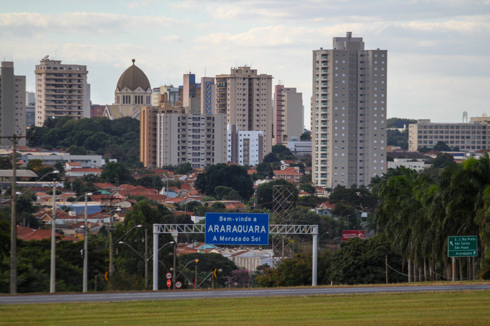

Sobre Araraquara
Araraquara é uma cidade do interior de São Paulo conhecida como "Morada do Sol" devido às suas altas temperaturas. Fundada em 1817, possui rica herança cultural e histórica, além de forte tradição ferroviária e arquitetônica.
Com diversos parques, museus e patrimônios históricos, a cidade oferece atrações para todas as idades e gostos.
Araraquara é um município brasileiro, localizado na região central do Estado de São Paulo. Distante 270 km da capital paulista, o município é formado pela sede e pelos distritos de Bueno de Andrada e Vila Xavier.
População: 242.228 (2022) Organização das Nações Unidas
Prefeito: Doutor Lapena
Universidade: Universidade de Araraquara
Fundação: 1817
Área: 1.004 km²
Elevação: 664 m
Altitude: 664 m
Sobre o nome
Existem duas explicações etimológicas para a origem do topônimo "Araraquara", a mais comum e adotada é também a que dá ao município o apelido de Morada do Sol. Segundo a obra "Monografia da Palavra Araraquara" de 1952, de Pio Lourenço Corrêa, o nome primitivo era Araquara, dada a existência da Serra de Araquará, com o passar do tempo, por homofonia com a palavra arara e ignorância do idioma tupi, passou-se a adotar o nome Araraquara.
Fundação
A 22 de agosto de 1817, foi criada a Freguesia de São Bento de Araraquara pela Resolução 32 - Reino - Resolução de Consciência e Ordens, então subordinada ao município de Piracicaba. A 30 de outubro de 1817, a freguesia foi elevada à categoria de distrito e, a 10 de julho de 1832, passou à de município, o qual foi instalado a 24 de agosto de 1833. A 20 de abril de 1866, passou à categoria de comarca pela Lei Provincial 61 e, a 6 de fevereiro de 1889, foi elevada à categoria de município, pela Lei Provincial Sete.
Em 1885, a chegada da ferrovia estimula o crescimento da cidade, que foi considerada a "Cidade Mais Limpa das Três Américas", além de ser a primeira no interior a ser servida por linhas de ônibus elétricos (trólebus). A Estrada de Ferro Araraquara foi fundada por um grupo de fazendeiros da região, liderados por Carlos Baptista de Magalhães, pai de Carlos Leôncio de Magalhães, ambos importantes proprietários de terras da cidade.
Climaüå•
Devido à sua altitude e localização, o clima de Araraquara é subtropical úmido (Cwa, de acordo com a Classificação de Köppen-Geiger) com invernos secos e amenos e verões quentes e chuvosos. O mês relativamente mais seco é agosto, apresentando uma precipitação média de 22 mm, enquanto o mês mais chuvoso é janeiro, com 237 mm. A quantidade média de chuva é de 1352 mm. Fevereiro é o mês mais quente do ano, com uma temperatura máxima média de 28.1 °C, enquanto julho é o mês mais frio, com 10,2 °C.
Economiaüí∞
Araraquara está entre as cidades mais desenvolvidas do Brasil em termos de qualidade de vida, emprego e renda, saúde e educação, com base no índice FIRJAN. Em 2020, seu PIB foi estimado pelo IBGE em 10.680.813 mil reais, enquanto seu PIB per capita em 44.813,53 reais.
Araraquara é um polo logístico, com sua história ligada à ferrovia, ao café, à cana-de-açúcar (com destaque para as Usinas Tamoio e Zanin, pertencentes à Raízen) e à Cutrale, maior produtora e exportadora de suco de laranja no Brasil. A indústria téxtil também se faz presente, com a sede da empresa de meias, uniformes e roupas íntimas Lupo.